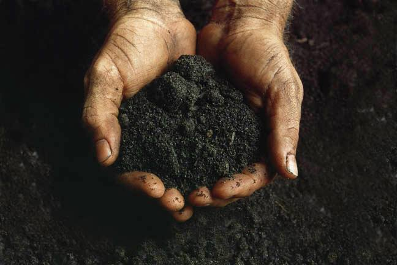

Sistahparty
Community group centering Black + POC lesbians in the Cleveland
area.
Active 1990-1995.
Black/Land Project
Oral History by Mistinguette Smith
-
Founder of Sistahparty and Black/Land Project
MISTINGUETTE: I was born in what used to be called City Hospital, I think it’s now Metro Health Hospital, in Cleveland, Ohio in October 1961. I’m a native Clevelander, and I started to be involved with the LGBT community mostly through feminist organizations. In the mid-1970’s and early-1980’s, the women’s movement in Cleveland was very strong, and many of those institutions were led by lesbians. When I was still in high school in the late 1970’s, I was very involved with the Cleveland Free Clinic. It was very much an alternative space, it wasn’t entirely about healthcare, it was also a space where people were experimenting with new ways of living and what we would call equity today. That connected me to some other institutions. There was an organization called WomenSpace, which was a hotline, information center, and meeting space for women’s organizing, much of which was lesbian-led. They were the original home of the The Cleveland Rape Crisis Center, where I was once a volunteer. I would say that in those days, probably 60% of the volunteers at the Rape Crisis Center were lesbians. In that time period, what it meant to be a lesbian was to put women at the center of your lives. It wasn’t just a sexual orientation; it was a political orientation around gender. I worked at the battered women’s shelter, which at the time was called Women Together. Interestingly, it later changed its name to The Center for the Prevention of Domestic Violence because there was a period in the domestic violence movement where lesbians were purged. The board of that organization decided that the name and the logo, which was three stylized women’s bodies under a roof, looked a little too much like lesbians. So that’s my initial context for LGBT Cleveland. And these community spaces were overwhelmingly white. But they were very powerful institutions.
-
Bars + Sets
MISTINGUETTE: THE lesbian bar was Isis, which we jokingly called Crisis, because there always was one [laughs]. And it was very much like lesbian bars of the 1950’s. There was a cop outside, there was a little narrow window that they looked at you through, you had to pay to get in, and if you were a Person of Color, you probably had to pay more to get in. There was a limit to how many Black people were allowed inside at a time, or the place would—as they said then—tilt. And when you walked in the bar it was very dark, all the walls were painted black, and there would always be a group of women sitting at the bar in the front, often Black and Latinx women, in fancy dresses. I later came to understand that those were women who lived straight lives and being at this bar was an outlet for them. There was always a knife fight or some crazy drunken brawl that happened, because that’s what happens when people’s internalized homophobia is loosened by large quantities of alcohol and they’re packed in a tight space without air conditioning. That was my experience with the bar scene, and I’m sure other people had very different experiences.
I’m not someone who drinks alcohol much, I was not looking for a partner, and it wasn’t attractive to me. It was also a very white space, so it wasn’t my music. It was the beginning for my longing for a different kind of space. So I investigated some of the social clubs, like The Eightball Club.There is a strong tradition to African American communities of having sets. A set is a private party, it might be at somebody’s home, or it might be at a hall that was rented. You bought a ticket—and for working class people those tickets were pricy—you got dressed to the nines, and for the price of the ticket, there was dancing, a buffet, and a setup with ice and mixers. You had to bring your own alcohol. Those sets and house parties were how I began to meet other Black lesbians. They were still strongly oriented around alcohol, and I was accustomed to moving in sober spaces. But I certainly went to those sets, and I was a young person then. This is probably 1978 or so, which means I was a teenager. I was not old enough to be in those places. There were older adult women, women in their 40’s and 50’s who would scope me out, as they said a baby, and they would tell people, No, you can’t dance with her. She can only have a ginger ale. No honey, you don’t sit at that table, you sit over here. So my experience of entering the Black lesbian community was as a place where I was taken care of. Where people looked out for my best interest, and where folks might be doing behaviors that were not very healthy, but I was always going to be protected by elders in that environment. So that is a very important part of my formation about what it means to be an adult Black lesbian.
There were also house parties in the 1970’s and the 1980’s. Cleveland Heights was the place where things were happening, it was a place where lesbians could live safely without being harassed by their neighbors. And there was a lot of community there, including Black community. I remember at least one house party—it was like a 1930’s Harlem house party. You paid some money at the door because you were helping somebody make rent, there was fried chicken coming out of the kitchen, and the host literally rolled the rug back to the edge of the wall so there was a dance floor. And people were delighted to have that space. Those are formative experiences for me as a baby dyke that led me to create more of that kind of space in Cleveland.
I got very involved with the white lesbian community in part because they were sober, nonviolent spaces that were oriented toward building ongoing daily life, community, and friendship. Everybody needs a community in which to feel safe and be recognized, and that community was organized around the bookstore. And I’m a very bookish person. That community was also organized around a place called The Women’s Building Project. This is a very important part of Cleveland lesbian history. That building was important for two reasons; one is that it had an office there, and it had a library full of lesbian and feminist texts. It was a meeting space with comfortable chairs and sofas, so if you were trying to organize a group, you had a safe space to meet other than someone’s home. And it was sometimes a drop-in space. The library would have volunteer librarians who would check out books, but mostly keep the space open so that you can drop in someplace that wasn’t a bar one evening after work. And the other thing that The Women’s Building Project did that was very important was house Oven Productions' Annual Womyn’s Variety Show—that was THE major social event of the year, and kind of the center of lesbian community. People would come from Youngstown and Akron and Canton to that event. So that was an important geographic space, and an important community, and really shaped my ideas of what community could in involve. Community could be around learning about something together, or talking about something together, as well as partying together. However, that was still a mostly pretty white space. It was an occasional Black face I would recognize that would show up regularly. But we didn’t have any space of our own together.
-
The Necessary Formation of Sistahparty
MISTINGUETTE: One day, I was talking to my friend, Denise Jackson, and I said, "Why can’t we just meet some sistahs that aren’t trying to pick us up or are too drunk to remember our names?" Denise was single at the time, I was not. I was in fact dating Denise’s best friend, and I’m now married to her. I said, "We should throw a party and invite all the Black lesbians we know. And it’s gotta be at your house, Denise, because I live in a little tiny one-bedroom apartment." And she said, "Yeah, we’ll throw a party. We’ll throw a Sistahparty." And that is how Sistahparty was born. We invited some people over, and we told them, "It’s not potluck, we’ll cook, just bring yourselves." The first time there were maybe 8 or 12 people, including Denise’s next-door neighbor and a friend who worked at another battered women’s shelter. And we enjoyed ourselves so much. We thought, it’s so great to have this kind of community where we talk about things that matter, let’s do it again. And the next month we did it again, and it was twice that size. And we did it again the following month. A few Puerto Rican sisters came, and one brought her guitar and one brought her drums. And in nine months, there were 150 of us gathering on a regular basis.
All of us were completely astonished. We began to break off into little cells inside of Sistahparty; the bookish folks had a book group, where we’d read a lesbian text together and get together and discuss it. There was a group of moms—someone who had been my best friend in second grade reconnected with me through Sistahparty and started a group for lesbians of Color who were parenting to discuss the particular issues that are true there: What does it mean when you’re parenting children who are actually your nieces or nephews? What does it mean to become a parent through adoption? What does it mean when you are co-parenting with your ex-spouse, who is a man, who’s not happy that you’re a lesbian? And you don’t have the support of your church, and you don’t have the support of your family?
We realized that we needed to stay in touch with each other, so we started a little newsletter. It was a print newsletter, because it was the early-1990’s at this point. And people photocopied the newsletter at their job when no one was looking [laughs]. We wrote out the labels by hand, and we mailed them to 150-200 members. It became a really robust institution, and it started to have its own annual events. The white lesbian community thought, Huh, look at that thing that’s happening there. What are we doing that makes Women of Color feel like they need a space separate from our community? Who are we, and how are we showing up? So it became an intervention around racism for white lesbians to see that this community existed, was self-sustaining, and not asking white lesbians for any kind of charitable contribution.
-
Placemaking against Systemic Odds
The Dinner Party gallery booklet.
Image courtesy of Through the Flower.
The community continued to grow. At some point we asked for support for a conference, a gathering. The artist, Judy Chicago, exhibited her piece, The Dinner Party, in Cleveland in 1981, and all the money that was earned from the show became the seed money for the Women’s Building Project and The Women's Community Fund. So Sistahparty asks for money from the Women’s Community Fund. We get a grant, and Dagmar Celeste, the governor’s wife, lends us her summer home and it was the first convening in a non-social setting of Black lesbians, to my knowledge, anywhere in between the west coast and the east coast. This is the first intentional lesbian of color community and the first gathering of that kind… This is probably around 1993.
A lot of consolidating energy came out of that, and one of the pieces of energy that came out was those lesbians of color saying, Wait… there are all these lesbian institutions here? Why are we marginalized from them? So Sistahparty went to the The LGBT Community Center and asked if they would be our fiscal sponsors if we wanted to try to get another grant from The Women’s Community Fund, or if we wanted to try to raise some money on our own. At the time, the LGBT Community Center was mostly white and had, I believe, only one Black board member—Frank Lowery—who remembers when the proposal was discussed, having his peers on the board say, we don’t know these people. In fact, all the members of the board had engaged with me and other members of Sistahparty in other capacities, but did not think of us as part of a body of People of Color. We were individual tokens. So that happened.
We also engaged with the white lesbian community around an event, which was a Black and White Ball. We all had a longing for that old set party culture where you got dressed up and things were very celebratory. It was an elevated occasion because the ethic for lesbian community in the 70’s-90’s was Come as you are, wear your flannel shirt. People were actively resisting the dress of gender and the dress of class. But white people were having that problem… Black people weren’t having that problem [laughs]. The tradition of the Black and White Ball is a tradition that is heightened in Black gay and lesbian communities. There are Cotton Balls in the summer, where you wear all white in your finest apparel. And in the winter, there are Black and White Balls, or Black Velvet Balls, where you are required to wear black and white formal wear. I was sent as the ambassador to tell the white lesbians that this did not mean they could iron some black jeans, and to explain that I was wearing a black velvet column dress.
Our Black and White Ball was held at SPACES, which Sistahparty rented out for the occasion. And it was difficult! There was not a bouncer at the door, there was not an open bar, and some Black and Latinx lesbians were like, What is this thing? This isn’t a party! There was champagne served at midnight, both alcoholic and non-alcoholic for a toast, but it wasn’t the center of who we were. The center of who we were was dancing and celebrating and seeing our friends and having some of our friends see us in a new context.
That was the same year that a phalanx of women from Sistahparty decided that they wanted to be part of the production staff of Oven Production’s Variety Show. Because if they were part of the production staff, the skits that got done would include skits with Women of Color, there would be Women of Color-led skits. The music that got played for dancing would include our music. The first time that was really visible, I believe, was at the annual Halloween party—that was the other big Oven Productions event. For the first time, there were more than six Brown faces in that sea of a thousand people. I remember my friend Denise showed up as a white girl. She did white face and wore a blond wig [Mistinguette and Leila laugh]. So that was a really big deal, because for the first time these women were learning skills, learning technical skills. They were being seen as leaders in the community, and they were making space to enter on their own terms.
One of the events that Sistahparty did every year, was we would host a community Kwanza, one of the nights of Kwanza, at the LGBT Community Center. And that was the only event that we did that was not just for Women of Color but for all people of African descent. It was a really moving thing. It was usually very small, but people brought their parents and their children to that event. I have a lovely picture of Frank Lowery in a suit with a Kente Stole holding somebody’s baby over his shoulder. And that was really the spirit of that event.
There’s one other thing that Sistahparty did, which was go public. Unlike The Eightball and the other set clubs—nobody ever talked about those public as being lesbian clubs. Sistahparty carried a twelve-foot long purple and black banner in the Pride parade. It was very hard to find four people willing to hold that, because it was not safe for people to be out. But we did that, and because we were visible, other people felt like they, too, could be visible. The Pride parade used to gather in front of CSU and walk down to Public Square, right through Downtown Cleveland. It was a very public event at a time when many people were closeted. It was certainly a time when you could have gotten fired from your job, you would have lost custody from your children, you would have gotten thrown out of church.
Cleveland Plain Dealer. January 22, 1991.
This is also happening in the early to mid-1990’s when Focus on the Family was focused on the Black church. Focus on the Family is a national organization of Evangelical religious folk, and they created a strategy that, in my opinion, was about removing the political power of the Black church. And the way they went about that was by providing funding for Black churches to build things they needed, like a health center or housing for elders—this is a thing that happened across the country so it was different in different communities—and what they wanted in exchange for that included Black churches to preach against homosexuality. That was a brand new thing. The Black church preached against homosexuality and against adultery and against stealing, but they weren’t gonna put you out if you didn’t do any of those things. The impact was to damage Black families as well as Black congregations. During this time I was working in AIDS services. I worked for what was then called The Health Issues Taskforce, because we couldn’t say AIDS then. One of the things we had difficulty doing was finding ministers who were willing to say a service for Black sons and daughters who had died with AIDS. And part of my job was taking the buddy program into Black churches, so we could take care of our own, because Black people were not willing to come into a white institution to figure out how to take care of our own community.
Erie Gay Community News. July, 1997.
LEILA: And to meet in Edgewater Park… that’s visibility.
That’s rightfully claiming access to public space.
MISTINGUETTE: And at the time, in the early 1990’s, that part of the west side was still almost entirely white. So to see a group of Black people at Edgewater Park, period, was an occupation of space that was significant. And to recognize that that was a lesbian and gay group, and what folks were doing with each other was something other than cruising and drinking, was really remarkable. So BlackOut Productions happened, and then another Black lesbian club called the Punani Posse arose. I was not a part of that, and I don’t know much about them, but I do know people who were involved.
-
An Act of Erasure
And then a sad thing happened… and this speaks to the relationship between an informal group like Sistahparty and an institutional group like the Lesbian-Gay Community Center [now called the LGBT Center of Greater Cleveland]. The Lesbian-Gay Community Center was asked by someone at Western Reserve Historical Society to put together an archive of the history of our community. And someone from the Lesbian-Gay Community Center asked me for archival material from Sistahparty, which at the time lived in my bedroom. I put together every newsletter we’d ever published, a copy of every flyer for every event we had ever done, a sample of minutes from some of our meetings, and our photography archive from everyone who had given me permission to collect their photographs. We really put a lot of work into it, and a year later when I asked, Hey, what happened with the archival project? How do I get access to that at Western Reserve Historical Society? I was told that our materials had been lost.
[Mistinguette takes a long pause]
And so the only other evidence that Sistahparty ever existed is a one-line mention in Her Neighbor's Wife. One of the essays mentions the existence of Sistahparty as the only group of its kind between San Francisco and New York City. We didn’t know we had done a thing like that. We were just trying to raise what we needed. And we were trying to pass on that piece of Black lesbian culture.
LEILA: There are no words for how deeply you were failed
by that loss.
MISTINGUETTE: It was not me who was failed or wronged. I am aware of young women, including young women in my family, who cannot imagine being out. Who cannot imagine a space for Black lesbians that’s not about hooking up or drinking. Who cannot imagine a community of that like a Kwanza, where they would be centered. And who are terrified to go to a Pride parade and could never imagine that their aunties before them carried a twelve foot banner that said “Sistahparty.” They are the ones who were so badly served by that loss.
[Mistinguette takes another pause]
Folks still talk about it with fondness, and yet didn’t recreate it. But it still turns up in little moments. My favorite of which is that the Lesbian-Gay Community Center that once told me, we don’t know who those people are, is now run by one of those people. Phyllis Harris and I met through Sistahparty.
-
Physical Space and the Concept of Rememory
LEILA: In my conversation with
Deidre McPherson, she points out the fact that gay men, especially gay white men,
already had institutions that were built for them. They were heavily
represented in the LGBT bar scene. And for that reason, Queer Women
of Color tended to create gathering space within their homes. And
that to me reaffirms that QWOC community often functions as chosen
family, hospitable and nurturing in ways that biological family may
not be. So I think there’s something powerful to that domestic
meeting space.
MISTINGUETTE: I think there is something powerful to the domestic space, and the domestic meeting space that reemerges in times when we are not able to build other collective meeting spaces. The domestic space reemerged as the Black lesbians, who used to run the social clubs and the set parties, aged out of being willing and able to hold those kind of public spaces. So people opened their homes, and that was a different kind of relationship. And then people were able to take up public space, and to do that in a networked way rather than a concentrated and exclusive way, like a set club.
Now people have again had to make community in a home space. Not having a physical space where we can point to and say, We were there, we built that, this thing used to happen there, prevents a certain kind of recording of history. Toni Morrison invented the word “rememory,” and she describes rememory as not remembering a thing that was there, but it is actually the physical presence of an object or a place that may no longer exist in current time, but still manifests and still exists in that historical time that we may remember. It presumes that time is not linear, and things do not come and go—we come and go. There is rememory of Sistahparty, because there is no place we can point to and say we built that, we lived here, we tended this spot.
And I think about that a lot, because when I worked at the battered women’s shelter, there was a vacant lot that was next door to us. And a group of lesbians led by a Black woman came to that lot, cleaned it out, and planted a garden with fruit trees. And I said, The women who are here in this shelter, they are under a lot of distress and they don’t want to do the extra work of tending a garden. And they responded, that’s okay, because we will always be able to look at that pear tree and say we were here. We cared for this space that cared for women.
-
Black/Land Project
-

Image courtesy of Black/Land Project
MISTINGUETTE:
The Black/Land Project
gathers Black people’s stories about their relationship to land and
place with a focus on non-agricultural land. It presumes that Black
people have a land ethic that they can articulate, and that they
transmit, and that land ethic has always been grounded in
regeneration.
I didn’t know any of those things when I started it. I went on a trip with some people and we were listening to Black people in Alabama talk about their land, and how they used vocabulary that none of us on the trip used. It was significant because those of us on the trip were a Black professor of natural history, a Black woman who worked in environmental philanthropy. We were the people who form other people’s thinking, and we aren’t even using our own language to talk about this. One of those people was a Black farmer; Leah Penniman of Soul Fire Farm and Farming While Black is now a national figure. But we were all just on this trip trying to figure ourselves out. And I said, you know what, I bet somebody’s doing some research about that. So I started asking who was doing that work, and people said I don’t know who’s doing that work, but let me tell you this story.
I started to gather the stories, and I started to do the analysis, and one of the people I interviewed in Flint, Michigan said, Now, don’t waste my time, you take my story and you stand it up next to somebody else’s story, and somebody else’s story, and you bring me back something I don’t already know. And that is how I learned that the Black/Land Project is a narrative-based research project done by and for Black people. I focused it on the post-industrial Midwest, and the places that people came from in the South to the post-industrial Midwest. I have a cluster of D.C. area interviews, and then Macon County, Alabama sent a huge number of people to the Cleveland area—including, as it turns out, my own ancestors. I was able to identify my family beyond the [?] of slavery as a result of doing the Black/Land work; connecting Macon County, Alabama to Cleveland, Ohio
Image courtesy of Black/Land Desire Mapping Workshop
So I would go to each community, I would do a series of interviews, I would make a really low-tech presentation, like PowerPoint instead of video so I could really quickly go back to people and say, Here’s what you told me what your story was—what did I get right? What did I get wrong? And how would it be useful for you to get this back? Cleveland wanted it back in the form of a workshop where folks did some desire mapping about what they would like their community land to be used like. The workshop that was led by Place Matters, and what started as a one-evening presentation grew to be a three-day conference about race, land, food, and justice hosted by Dr. Rhonda Y. Williams at Case Western Reserve University.
Folks in Flint, Michigan said, People come and they study us all the time. They read their white papers in Washington, but we never get to hear what sense they’ve made about what we’ve told them. Could we have one For Us By Us? So Black/Land Project wrote what we called a Brown Paper for Flint. The residents of Flint used it to do three things – one was change how museum exhibits about the history of Flint, Michigan were curated. A second was to serve as a platform that caused the Mayor of the City of Flint to invite Black Flintonians to the annual city planning process. He put up thirty chairs and a hundred thirty people came. So it created this groundswell of desire. And thirdly, it provided the first conversations that lead to organizing around the water crisis in Flint. So in each city, we had a different project around returning that data, but now I need to pull all of that together and tell the broader story about what it means that Black people have a relationship to land that is not grounded in ownership, and is not grounded in territory in the way that Indigenous people’s land is, and yet it is still an ethic of care and identity.
• • •